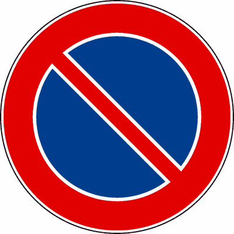
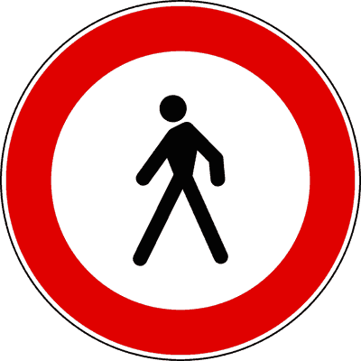
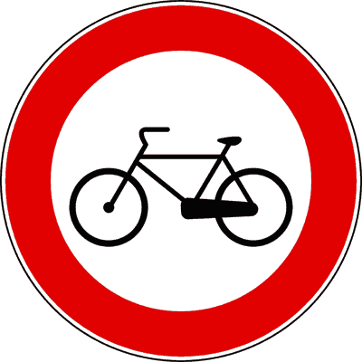
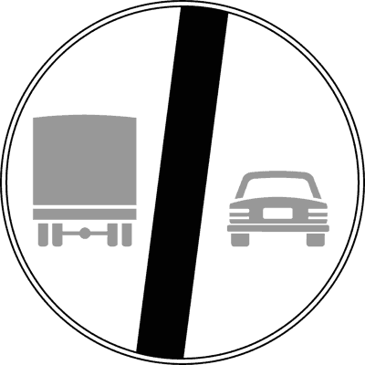
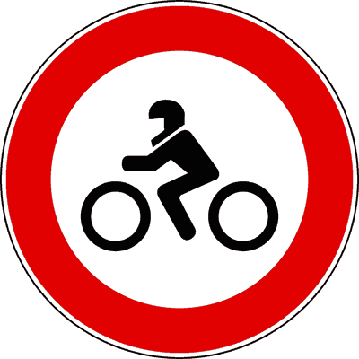

الوقوف والتوقف والركن وبدء السير
الدليل الهندسي الشامل لحالات ثبات المركبة الأربع في كود السير الإيطالي: التمييز القاطع بين التوقف اللحظي (Fermata) والركن (Sosta)، المسافات القانونية الدقيقة (5م و15م)، قواعد الركن في المنحدرات (Pendenza)، فك شفرة مدخل الجراج الخاص (Passo Carrabile)، ومخالفات سحب النقاط.
التوقف المؤقت اللحظي للمركبة
- التوقف المؤقت هو تعليق لحظي لمسيرة المركبة لصعود أو نزول الركاب لدقائق معدودة.
- يُشترط وجود السائق في مقعد القيادة ومستعداً للتحرك فوراً دون إحداث أي إعاقة للمرور.
- لا يلزم إطفاء محرك المركبة أثناء التوقف المؤقت السريع.
- يزعم أنه يسمح للسائق بالابتعاد عن المركبة لشراء الجريدة أو تناول القهوة (خطأ فادح، هذا ركن Sosta).
- يزعم وجوب إطفاء المحرك وشد فرامل اليد أثناء التوقف المؤقت (FALSO).
إذا ابتعد السائق عن مقود السيارة ولو لدقيقة واحدة، اعتُبر التصرف قانونياً "ركن" (Sosta) وتُطبق عليه عقوبة الركن المخالف!
ركن المركبة والانتظار الطويل
- الركن هو تعليق السير ممتداً في الزمن مع مغادرة السائق لمقعد القيادة والمركبة.
- يلزم إطفاء محرك المركبة، واستخدام فرامل اليد وتأمين المركبة ضد التحرك التلقائي أو السرقة.
- يجب ركن المركبة بموازاة الرصيف في اتجاه السير المصرح به.
- يزعم جواز ترك المحرك يعمل لتشغيل مكيف الهواء أثناء الركن (FALSO، يعاقب بغرامة مالية).
- يزعم جواز الركن في صف ثانٍ (Seconda fila) إذا تركت أضواء الطوارئ تعمل (ممنوع تماماً).
يحظر كود السير تماماً إبقاء محرك المركبة دائراً لتشغيل التكييف أثناء الركن لتقليل التلوث البيئي واستهلاك الطاقة.

لوحة مدخل الجراج الخاص المرخص
- تشير إلى مدخل مخصص لخروج ودخول المركبات من وإلى الأملاك الخاصة والجراجات.
- تمنع الركن (Sosta) منعاً باتاً على مدار الـ 24 ساعة أمام المدخل.
- تسمح بالتوقف المؤقت اللحظي (Fermata) بشرط ألا يعرقل خروج أو دخول المركبات.
- تدعي أن إشارة Passo Carrabile تمنع التوقف المؤقت (Fermata) أيضاً (FALSO، تمنع الركن فقط).
- تزعم أن اللوحة صالحة ومُلزمة قانونياً حتى بدون ذكر اسم البلدية ورقم الترخيص (FALSO).
لوحة Passo Carrabile تمنع الركن (Sosta) ولكنها تسمح بالتوقف (Fermata) اللحظي، بشرط ألا تمنع أو تعيق عبور سيارات أصحاب الجراج!

إشارة منع الركن والانتظار
- تمنع ركن المركبات فقط من الساعة 08:00 حتى 20:00 داخل المدن ما لم توجد لوحة إضافية تحدد غير ذلك.
- تسري على مدار 24 ساعة كاملة خارج المناطق السكنية (Strade extraurbane).
- تسمح بالتوقف المؤقت اللحظي (Fermata) لصعود أو نزول الركاب.
- يزعم أنها تمنع التوقف المؤقت (Fermata) في كل الأحوال (FALSO، التوقف مسموح).
- يزعم أنها تسمح بالركن إذا قام السائق بتشغيل أضواء الطوارئ الأربعة (FALSO).
في المدن تسري الإشارة من 8:00 إلى 20:00 تلقائياً، ولكن خارج المدن تسري طوال الـ 24 ساعة دون الحاجة لأي لوحة إضافية!

إشارة منع التوقف والركن معاً
- تمنع كلياً كلاً من التوقف المؤقت (Fermata) والركن (Sosta) على مدار 24 ساعة دون استثناء.
- تسري داخل وخارج المدن طوال الليل والنهار دون الحاجة للوحات إضافية.
- تجيز حجز وسحب المركبة المخالفة بالرافعة (Rimozione forzata) تلقائياً.
- تدعي السماح بالتوقف اللحظي لنزول مسن أو معاق (FALSO، المنع قاطع وكامل).
- تزعم أنها تسري فقط من الساعة 08:00 إلى 20:00 في المدن (FALSO، تسري 24 ساعة دائماً).
إشارة منع التوقف (رمز X الأحمر) تسري دائماً 24 ساعة داخل وخارج المدن وتمنع حتى نزول الركاب السريع لثوانٍ معدودة!

قرص الساعات ومواقف الركن المؤقت
- تلزم السائق بضبط قرص التوقيت (Disco Orario) ليوضح دقيقة وساعة بدء الركن ووضعه خلف الزجاج الأمامي.
- في حال عدم وجود القرص، يجوز كتابة وقت البدء بخط واضح على ورقة ووضعها على التابلوه.
- تنتهي صلاحية الركن بانقضاء المدة المحددة على اللوحة الإضافية المرفقة (مثلاً 60 دقيقة).
- يزعم جواز تحريك عقارب القرص للأمام دون تحريك المركبة لتمديد وقت الركن (مخالفة وتزوير).
- يزعم أن قرص التوقيت مطلوب في المواقف الخاضعة للدفع بواسطة الباركومتر (FALSO).
إذا لم يكن معك قرص الساعات، يقبل القانون كتابة وقت البدء على ورقة عادية واضحة، ولا يجوز مطلقاً التلاعب بالوقت دون تحريك السيارة!

الركن المصرح به فوق الرصيف
- القاعدة العامة: الركن فوق الأرصفة ممنوع منعاً باتاً لكونها مخصصة حصرياً للمشاة.
- الاستثناء الوحيد: إذا وُجدت علامات تخطيط أرضية صريحة أو لوحة تشير لإمكانية الركن جزئياً أو كلياً فوق الرصيف.
- يلزم ترك ممر كافٍ لحركة المشاة وعربات الأطفال والمعاقين.
- يزعم جواز صعود عجلتين فوق الرصيف إذا كان الشارع ضيقاً حتى دون وجود إشارة (ممنوع قطعاً).
- يزعم أن الدراجات النارية يسمح لها دائماً بالركن فوق الرصيف (FALSO، يمنع بدون لوحة مخصصة).
الركن فوق الرصيف بدون لوحة وتخطيط أرضي رسمي يعاقب عليه بغرامة مالية وسحب نقطتين من رخصة القيادة!
الركن في الطرق المنحدرة والمرتفعة
- في النزول (*Discesa*): تعشيق الغيار الخلفي (*Retromarcia*) وشد فرامل اليد وإدارة العجلات نحو الرصيف.
- في الصعود (*Salita*): تعشيق الغيار الأول (*Prima marcia*) وشد فرامل اليد وإدارة العجلات نحو الرصيف.
- في الشاحنات والحافلات والمقطورات: يلزم وضع إسفين التثبيت الميكانيكي (*Cuneo fermaruota*).
- يزعم وضع ذراع السرعة على وضع الحياد (Folle) في المنحدرات (خطأ فادح يؤدي لانفلات السيارة).
- يزعم وجوب توجيه العجلات نحو منتصف الطريق لتسهيل الانطلاق لاحقاً (FALSO ومخالف للأمان).
احفظ المعادلة الوزارية: نزول = ريفرس (Discesa = Retromarcia) | صعود = غيار أول (Salita = Prima marcia)!
المسافات القانونية الإلزامية لمواقف الركن
- **5 أمتار**: مسافة حظر الركن قبل وبعد التقاطعات (Intersezioni) لضمان زاوية الرؤية.
- **5 أمتار**: حظر الركن بالقرب من محابس إطفاء الحريق (Idranti) وعلامات المشاة.
- **15 متراً**: مسافة حظر الركن قبل وبعد أعمدة محطات الحافلات والترام (Fermata autobus/tram) إذا لم تكن الخطوط مرسومة على الأرض.
- يزعم أن المسافة المطلوبة عند محطات الحافلات هي 10 أمتار أو 5 أمتار (FALSO، الرقم الرسمي 15 متراً).
- يزعم أن المسافة عند التقاطعات 10 أمتار خارج المدن (FALSO، 5 أمتار هي القاعدة القياسية الحضرية).
احفظ الرقمين: 5 أمتار للتقاطع وإشارات المرور ومحابس الإطفاء، و15 متراً لأعمدة توقف الأتوبيس والترام!
خصم النقاط في مخالفات الركن غير القانوني
- الركن في الأماكن المخصصة لذوي الاحتياجات الخاصة (Invalidi) يخصم نقطتين (-2 Punti) مع سحب السيارة.
- الركن في مسارات الحافلات ومحطاتها المحددة بالأصفر يخصم نقطتين (-2 Punti).
- الركن على ممرات المشاة (Strisce pedonali) ومسارات الدراجات يخصم نقطتين (-2 Punti).
- يزعم أن مخالفات الركن العادي في الصفوف المزدوجة تقتصر دائماً على غرامة ولا تخصم نقاطاً أبداً (FALSO).
- يزعم سحب رخصة القيادة فوراً عند الركن الخاطئ لأول مرة (FALSO، العقوبة غرامة وخصم نقاط وسحب المركبة).
أي ركن يعتدي على الفئات الضعيفة (معاقين، مشاة، حافلات عامة) يوجب خصم نقطتين (-2 Punti) فوراً!
النزول الآمن وفتح أبواب المركبة
- يحظر فتح الأبواب أو النزول أو تركها مفتوحة دون التحقق المسبق من عدم تعريض المشاة وراكبي الدراجات للخطر.
- يُنصح بفتح الباب باليد البعيدة (المناورة الهولندية - Dutch Reach) لإجبار الجسد على الالتفات للمرآة والنقطة العمياء.
- السائق مسؤول قانونياً عن أمان نزول الركاب وفتحهم للأبواب.
- يزعم أن مسؤولية فتح الباب تقع دائماً على راكب الدراجة القادم من الخلف (FALSO، المسؤولية كاملة على من فتح الباب).
- يزعم جواز ترك باب السيارة مفتوحاً باتجاه الشارع لتحميل البضائع بسرعة (FALSO، مخالفة خطيرة).
فتح الباب دون النظر والتسبب في اصطدام دراجة يعتبر خطأ جسيماً يتحمل السائق مسؤوليته الجنائية والمدنية كاملة!
الإجراءات والضوابط قبل الانطلاق والقيادة
- ضبط وضعية مقعد القيادة ودواسات التحكم لتناسب طول وبنية السائق.
- ضبط المرايا العاكسة (الداخلية والخارجية) بعد ضبط المقعد مباشرة وليس قبله.
- ربط حزام الأمان والتأكد من ربط جميع الركاب لأحزمتهم وإغلاق الأبواب بإحكام.
- يزعم ضبط المرايا العاكسة أولاً ثم ضبط وضعية المقعد (FALSO، المقعد يضبط أولاً دائماً).
- يزعم عدم إلزامية ارتداء النظارات الطبية إذا كانت مسافة القيادة قصيرة (FALSO، إذا كانت مثبتة على الرخصة).
الترتيب الهندسي الصحيح: 1) ضبط المقعد، 2) ضبط المرايا، 3) ربط حزام الأمان. ضبط المرايا قبل المقعد خطأ امتحاني مكرر!